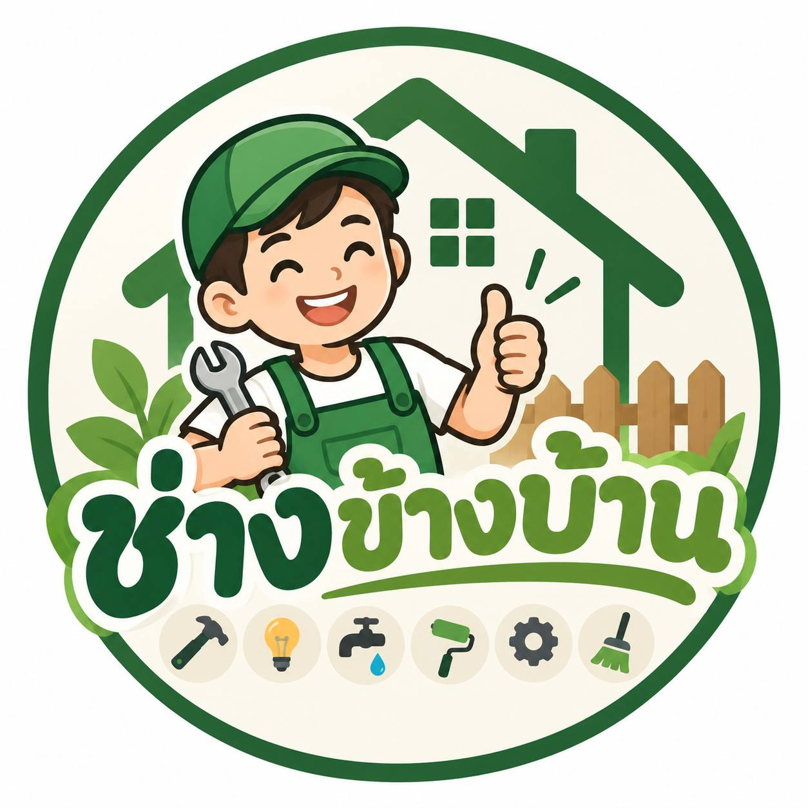

ผลงานจริงจากช่างนัด
ดูงานจริง ก่อนตัดสินใจ
รวมภาพผลงานก่อสร้าง ต่อเติม งานไฟฟ้า งานประปา และงานดูแลบ้านของช่างข้างบ้าน
งานก่อสร้างและต่อเติม
ผลงานบ้านและโครงสร้าง
เลื่อนซ้าย–ขวาเพื่อดูรูปเพิ่มเติม
ต้องการให้งานของคุณออกมาแบบนี้ไหม?

ช่างข้างบ้าน.โทรหาเรารวมภาพผลงานก่อสร้าง ต่อเติม งานไฟฟ้า งานประปา และงานดูแลบ้านของช่างข้างบ้าน
เลื่อนซ้าย–ขวาเพื่อดูรูปเพิ่มเติม